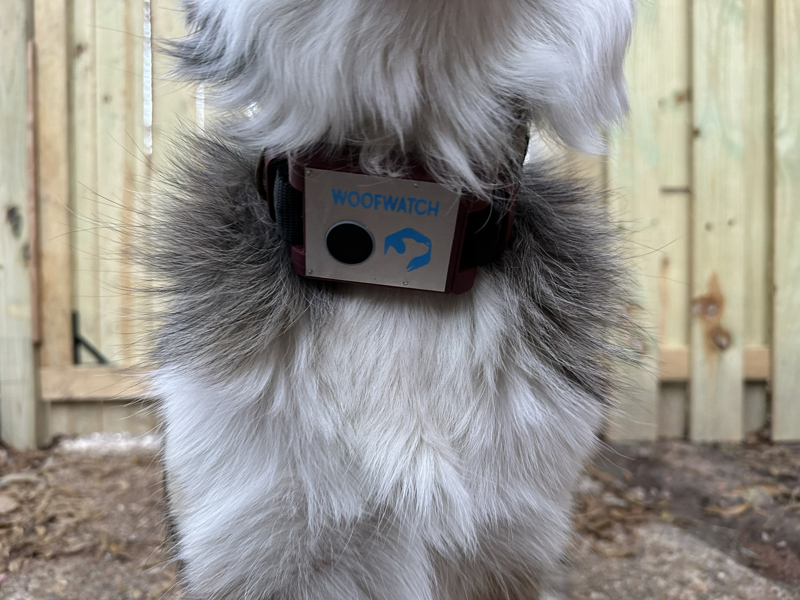
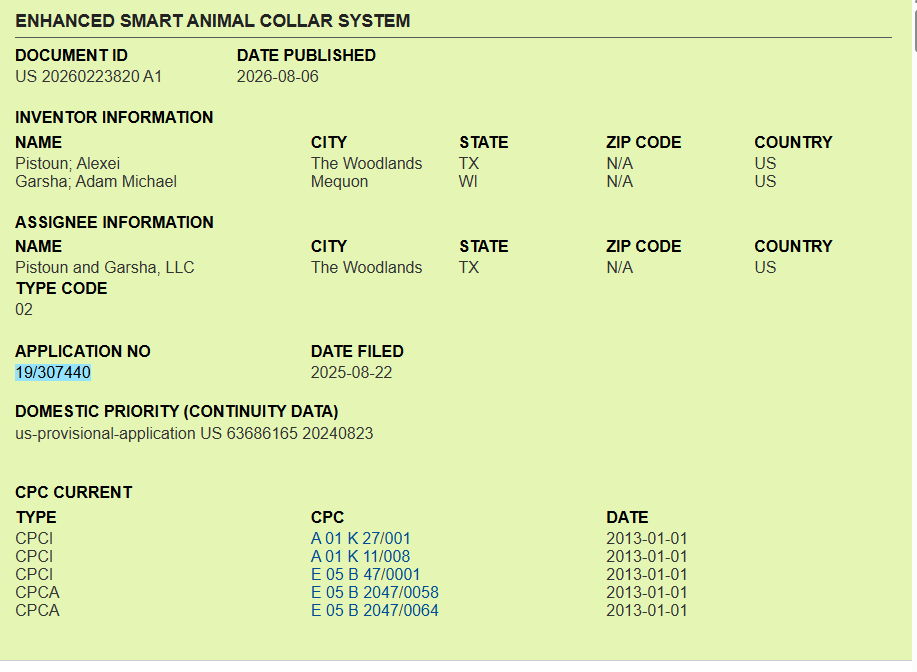
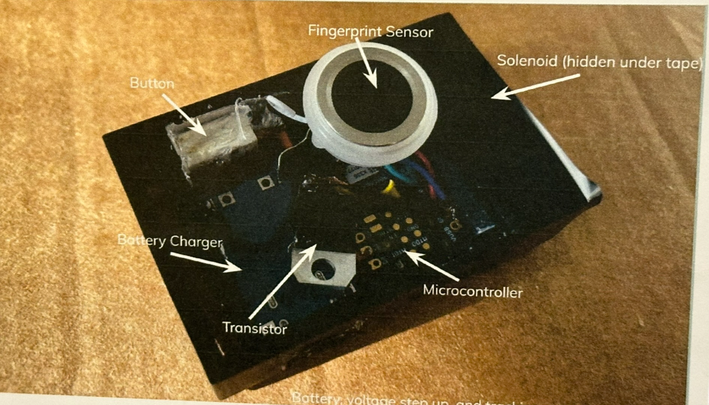
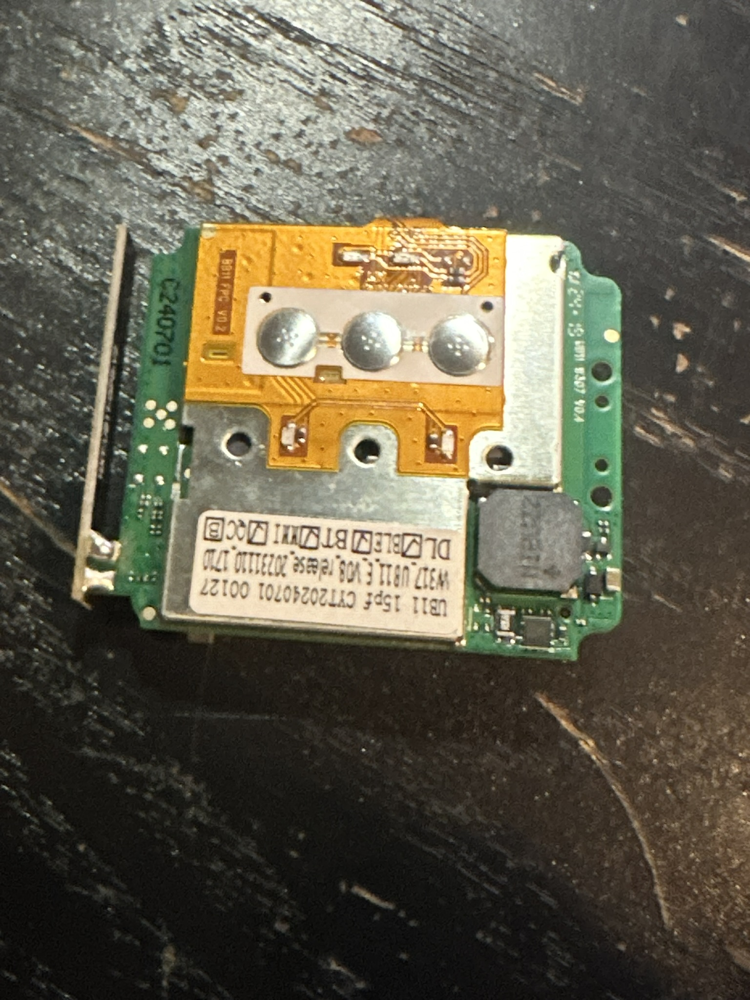
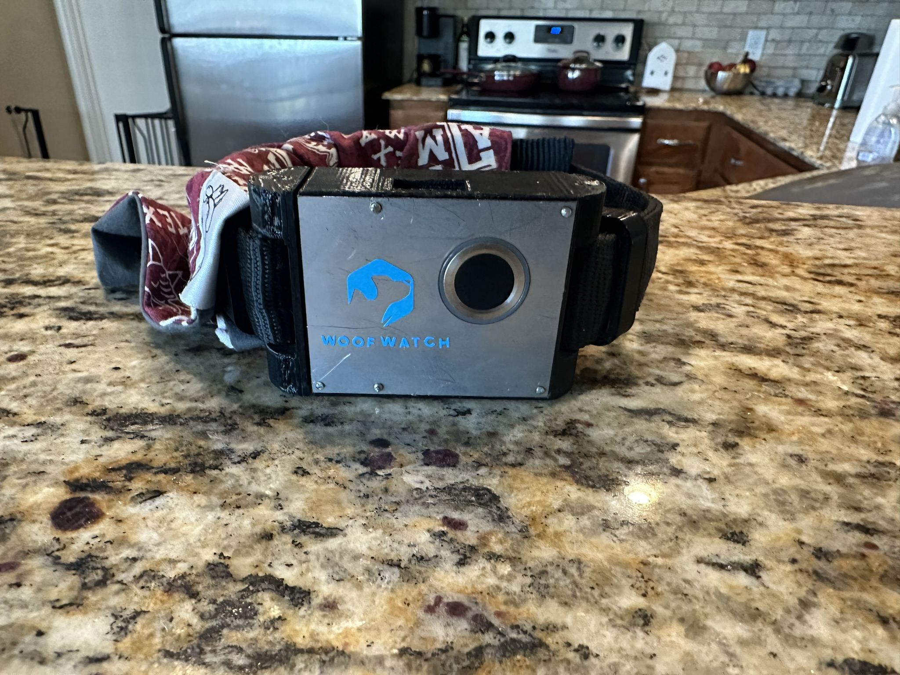
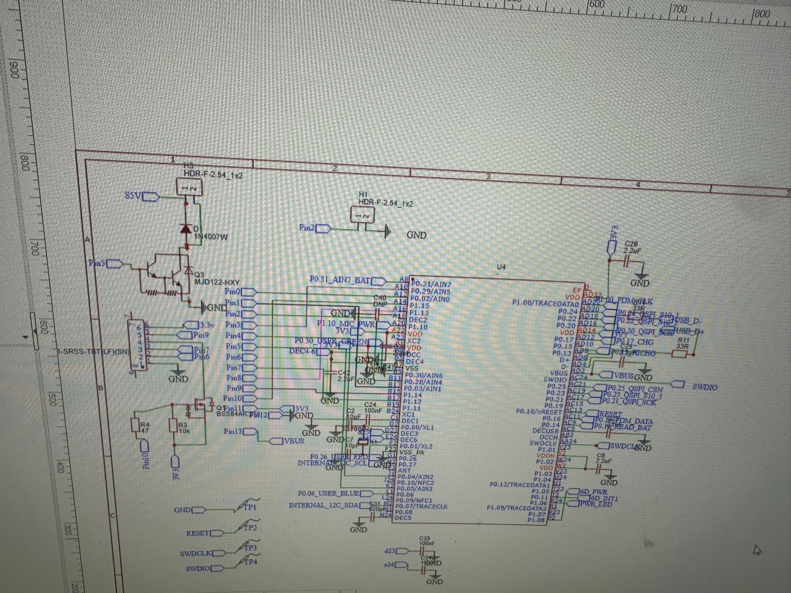
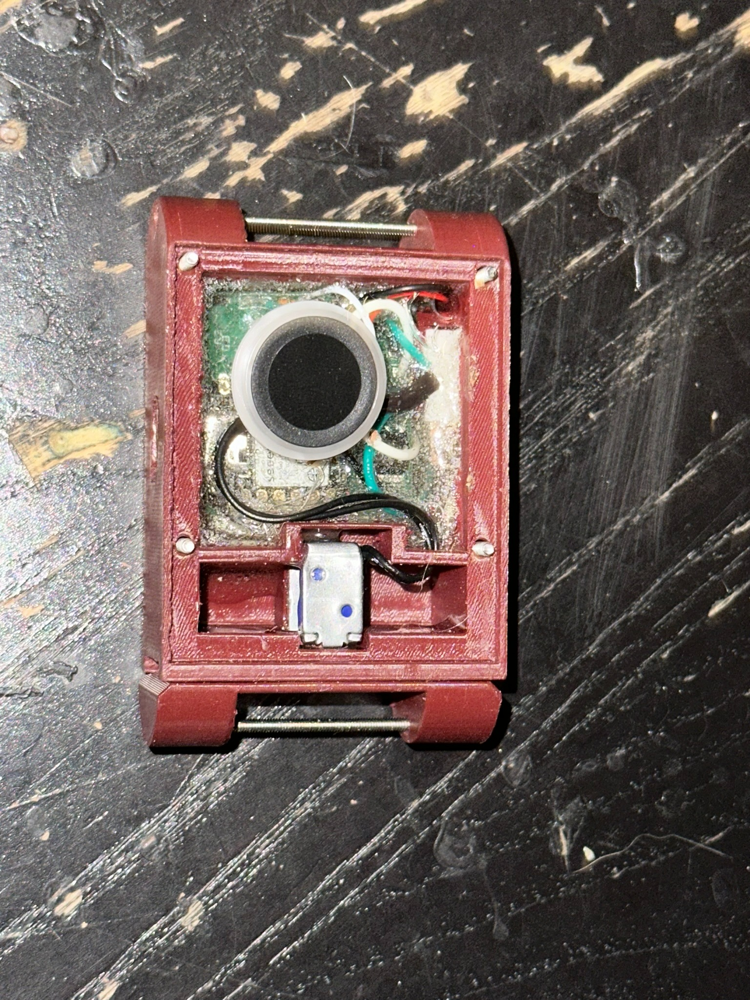

Five major prototype stages from proof of concept to product-style prototype.
I worked on WoofWatch as a founder and electrical lead on a five-person student team. The project combined fingerprint access, an electromechanical locking system, embedded electronics, custom PCB development in Altium and EasyEDA, 3D-printed enclosures, wearable testing, and product presentation.
The page below is organized chronologically so the engineering progression is visible instead of presenting dozens of images as one large gallery.
PCB DesignAltiumEasyEDAEmbedded SystemsSolidWorks3D PrintingProduct DevelopmentPatent publication and assignment record
As the project matured, WoofWatch was formalized through a U.S. patent application and assignment paperwork. These screenshots document the published application, the abstract describing the smart animal collar system, and the assignment record tying the filing to Pistoun and Garsha, LLC.

Early proof of concept
V1 established the core operating concept: a fingerprint sensor, microcontroller, transistor-driven solenoid lock, battery charging hardware, and manual control packaged into an early wearable enclosure.

V1 demonstrations
Competitor benchmarking and the first custom PCB
V2 moved from an early proof of concept toward a more integrated product. The team benchmarked a competing GPS tracker, revised the enclosure, and developed the first custom WoofWatch PCB in Altium.

V2 demonstration
Mechanical reinforcement and waterproofing trials
V3 retained the core V2 electronics architecture while focusing on durability, and PCB design work moved from Altium to EasyEDA. A metal front plate and stronger collar attachment were added, followed by early waterproofing and environmental-resistance trials.

V3 testing
Parallel development of two new PCB designs
V4 was a larger electronics redesign developed in EasyEDA. Two board approaches were developed in parallel so packaging, routing, component placement, and manufacturability could be compared before committing to the next architecture.

Sliding-lock redesign and refined product prototype
V5 changed the mechanical load path. The collar opens and closes through a slide, while the solenoid locks or releases that slide instead of directly carrying the full opening load. This reduced strain on the solenoid and made the mechanism more robust.

V5 demonstrations
From bench prototype to a much more integrated product.
Across the project, WoofWatch progressed through custom electronics, several enclosure and locking revisions, wearable tests, waterproofing experiments, packaging, and public presentation. The first custom PCB was designed in Altium for V2; V3 and later PCB development moved to EasyEDA. The project also resulted in a published U.S. patent application for the smart animal collar system, along with assignment documentation for the filing.
The version history is intentionally preserved here because the iteration process is as important as the final prototype.